Look n°15
Coin coiffeuse rose et lumineux
Un petit coin coiffeuse tout doux et lumineux : arche LED blanc chaud, néon nœud, rideaux rose poudré et chaise coquillage. Voici les articles pour recréer ce coin beauté chez toi, même dans une petite chambre.
Prix au 26/10/2026
-
Coiffeuse blanche avec miroir LED et 7 tiroirs
110 × 40 × 139 cm, miroir avec lumière LED réglable (3 teintes), tablettes de rangement. Sur l'image, les tablettes du haut sont un peu différentes.
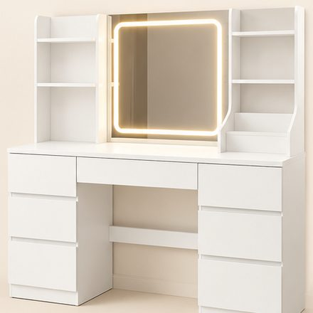
-
Chaise coiffeuse coquillage en velours rose
Dossier en pétales, assise épaisse, pieds en métal doré. 62 × 61,5 × 77,5 cm.
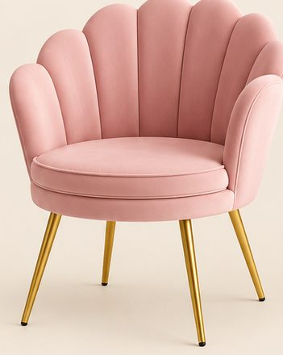
75,99 €Voir sur Amazon -
Rideaux rose poudré et voilages blancs
Rideau occultant 140 × 250 cm vendu à l'unité : en prendre 2. Voilages blancs 140 × 260 cm, lot de 2. La lumière au-dessus de la tringle vient du ruban LED (n° 7).
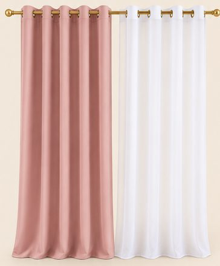
-
Support à plantes blanc et plantes tombantes
Support en métal blanc et bois clair, 80 cm, 4 tablettes en escalier (sur l'image, elles sont empilées). Lot de 4 plantes tombantes artificielles en pots blancs.
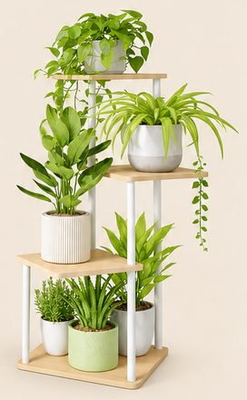
-
Tapis rond en fausse fourrure blanche
Ø 120 cm, poil doux, lavable.
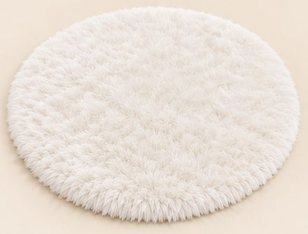
59,99 €Voir sur Amazon -
Plafonnier LED fleur à 5 pétales
Ø 60 cm, du blanc chaud au blanc froid, avec télécommande. Règle-le en blanc chaud pour cette ambiance.
64,74 €Voir sur Amazon -
LED blanc chaud : arche lumineuse et ruban
Le néon LED souple (5 m) dessine l'arche autour de la coiffeuse, collé sur le contour d'une arche peinte en rose. Le ruban LED (5 m) se cache sous la coiffeuse et au-dessus de la tringle.
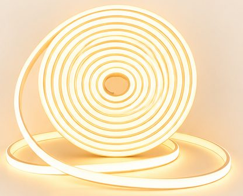
-
Néon LED nœud rose
38 × 36 cm, sur plaque transparente, branchement USB avec interrupteur.
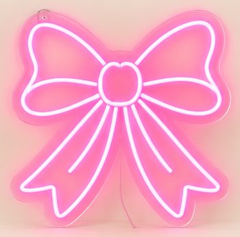
37,99 €Voir sur Amazon -
Lampe en cristal
38 cm, abat-jour en pampilles de cristal, pied chromé, ampoule E27.
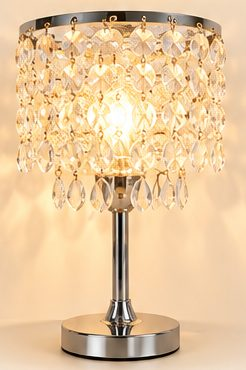
35,99 €Voir sur Amazon -
Bougies LED roses avec guirlande (lot de 3)
Cire rose, flamme LED qui vacille, guirlande intégrée, télécommande.
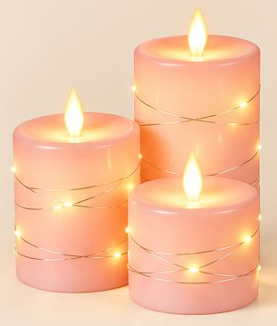
30,86 €Voir sur Amazon -
Porte-bijoux en velours rose
Velours rose et métal or rose, 31 cm : bracelets, colliers, boucles d'oreilles et bagues.
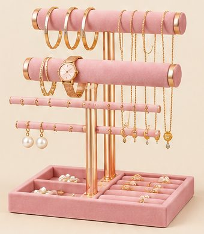
25,99 €Voir sur Amazon -
Organisateur d'angle transparent
Acrylique, 2 étages, pour parfums et soins. Le vrai a une forme d'angle (sur l'image, il est rectangulaire).
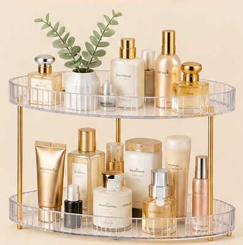
-
Diffuseur de parfum rose
250 ml, 10 bâtonnets, avec une rose décorative.
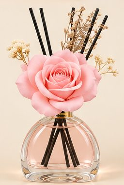
27,99 €Voir sur Amazon -
Coussin nœud bouclette blanc
Ø 22 cm : plus petit que sur l'image.
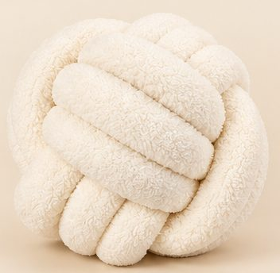
20,88 €Voir sur Amazon
Enregistrer ce look sur Pinterest
Image d'inspiration générée par IA. Prix indicatifs, revérifiés toutes les deux semaines.